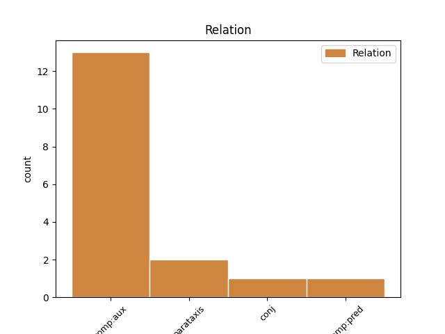
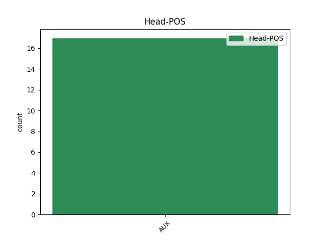
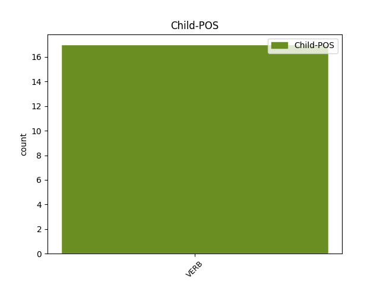

Distribution of features within this leaf



Agreement Rules sorted by frequency.
- When the dependent token is the complement for auxiliary(comp:aux) of the head token, and the head token is AUX
1 Эртын _ _ _ _ 0 _ _ _
2 Ромада _ _ _ _ 0 _ _ _
3 бүри _ _ _ _ 0 _ _ _
4 талханай _ _ _ _ 0 _ _ _
5 алаабхи _ _ _ _ 0 _ _ _
6 хүрэтэр _ _ _ _ 0 _ _ _
7 бии бии VERB _ Mood=Ind|Number=Sing|Person=3|Tense=Past|VerbForm=Fin 8 comp:aux _ _
8 болоо бол AUX _ Mood=Ind|Number=Sing|Person=3|Tense=Past|VerbForm=Fin 0 _ _ _
9 һэн _ _ _ _ 0 _ _ _
10 . _ _ _ _ 0 _ _ _
1 Эртын _ _ _ _ 0 _ _ _
2 Грециин _ _ _ _ 0 _ _ _
3 хамагай _ _ _ _ 0 _ _ _
4 алдартай _ _ _ _ 0 _ _ _
5 үень _ _ _ _ 0 _ _ _
6 МЭҮ _ _ _ _ 0 _ _ _
7 480 _ _ _ _ 0 _ _ _
8 - _ _ _ _ 0 _ _ _
9 323 _ _ _ _ 0 _ _ _
10 он _ _ _ _ 0 _ _ _
11 хүрэтэрхи _ _ _ _ 0 _ _ _
12 хугасаае _ _ _ _ 0 _ _ _
13 хамарха _ _ _ _ 0 _ _ _
14 Һунгадаг _ _ _ _ 0 _ _ _
15 эрин _ _ _ _ 0 _ _ _
16 болоод _ _ _ _ 0 _ _ _
17 Грекшүүд _ _ _ _ 0 _ _ _
18 хүгжэл _ _ _ _ 0 _ _ _
19 дэбжэлтынгөө _ _ _ _ 0 _ _ _
20 орьёлдо _ _ _ _ 0 _ _ _
21 хүрэжэ хүрэ VERB _ Mood=Ind|Number=Plur|Person=3|Tense=Past|VerbForm=Fin 28 parataxis _ _
22 , _ _ _ _ 0 _ _ _
23 гайхалтай _ _ _ _ 0 _ _ _
24 уралигай _ _ _ _ 0 _ _ _
25 бүтээлнүүдые _ _ _ _ 0 _ _ _
26 үйлэдэжэ _ _ _ _ 0 _ _ _
27 үлдэгдэһэн _ _ _ _ 0 _ _ _
28 бэлэй бэл AUX _ Mood=Ind|Number=Sing|Person=3|Tense=Past|VerbForm=Fin 0 _ _ _
29 . _ _ _ _ 0 _ _ _
1 Байгаалиин _ _ _ _ 0 _ _ _
2 тогтосо _ _ _ _ 0 _ _ _
3 боомдо _ _ _ _ 0 _ _ _
4 руу _ _ _ _ 0 _ _ _
5 , _ _ _ _ 0 _ _ _
6 мүн _ _ _ _ 0 _ _ _
7 Атлантын _ _ _ _ 0 _ _ _
8 далай _ _ _ _ 0 _ _ _
9 руу _ _ _ _ 0 _ _ _
10 урдадаг _ _ _ _ 0 _ _ _
11 Хадсон _ _ _ _ 0 _ _ _
12 голой _ _ _ _ 0 _ _ _
13 эхэ _ _ _ _ 0 _ _ _
14 һорболжо _ _ _ _ 0 _ _ _
15 дээрэ _ _ _ _ 0 _ _ _
16 байрлаһан _ _ _ _ 0 _ _ _
17 тус _ _ _ _ 0 _ _ _
18 хотые _ _ _ _ 0 _ _ _
19 худалдаанай _ _ _ _ 0 _ _ _
20 хото _ _ _ _ 0 _ _ _
21 болгон болг VERB _ Case=Nom|Tense=Past|VerbForm=Part 25 comp:pred _ _
22 хүгжүүлхэдэ _ _ _ _ 0 _ _ _
23 гол _ _ _ _ 0 _ _ _
24 нүхэсэл _ _ _ _ 0 _ _ _
25 болоһон боло AUX _ Mood=Ind|Number=Plur|Person=1|Tense=Past|VerbForm=Fin 0 _ _ _
26 . _ _ _ _ 0 _ _ _
Disagree Examples:
1 Грециин _ _ _ _ 0 _ _ _
2 олон _ _ _ _ 0 _ _ _
3 ниитэ _ _ _ _ 0 _ _ _
4 дайнай _ _ _ _ 0 _ _ _
5 аюул _ _ _ _ 0 _ _ _
6 арилһан _ _ _ _ 0 _ _ _
7 гэжэ _ _ _ _ 0 _ _ _
8 үзэһэн _ _ _ _ 0 _ _ _
9 тохёолдолдо _ _ _ _ 0 _ _ _
10 энэ _ _ _ _ 0 _ _ _
11 татабариие _ _ _ _ 0 _ _ _
12 хүсэнгүй _ _ _ _ 0 _ _ _
13 болгохо _ _ _ _ 0 _ _ _
14 эрхэтэй _ _ _ _ 0 _ _ _
15 байһан байһ VERB _ Mood=Ind|Number=Sing|Person=3|Tense=Past|VerbForm=Fin 16 comp:aux _ _
16 байна ба AUX _ Mood=Ind|Number=Sing|Person=3|Tense=Pres|VerbForm=Fin 0 _ _ _
17 . _ _ _ _ 0 _ _ _
1 Гэбэшье _ _ _ _ 0 _ _ _
2 дуудалга _ _ _ _ 0 _ _ _
3 хубилагдаһан _ _ _ _ 0 _ _ _
4 болобошье _ _ _ _ 0 _ _ _
5 нэгдэмэл _ _ _ _ 0 _ _ _
6 нэгэ _ _ _ _ 0 _ _ _
7 үзэгээр _ _ _ _ 0 _ _ _
8 бэшэгэй _ _ _ _ 0 _ _ _
9 хэлэеэ _ _ _ _ 0 _ _ _
10 тэмдэглэжэ _ _ _ _ 0 _ _ _
11 байһан _ _ _ _ 0 _ _ _
12 тула _ _ _ _ 0 _ _ _
13 харилсаанда _ _ _ _ 0 _ _ _
14 ороходо _ _ _ _ 0 _ _ _
15 асуудалгүй _ _ _ _ 0 _ _ _
16 байһан байһ VERB _ Mood=Ind|Number=Sing|Person=3|Tense=Past|VerbForm=Fin 17 comp:aux _ _
17 байна бай AUX _ Mood=Ind|Number=Sing|Person=3|Tense=Pres|VerbForm=Fin 0 _ _ _
18 . _ _ _ _ 0 _ _ _
1 Зүблэлтэ _ _ _ _ 0 _ _ _
2 Холбоо _ _ _ _ 0 _ _ _
3 үзэл _ _ _ _ 0 _ _ _
4 шурталай _ _ _ _ 0 _ _ _
5 хубида _ _ _ _ 0 _ _ _
6 дэлхэйн _ _ _ _ 0 _ _ _
7 социалис _ _ _ _ 0 _ _ _
8 лагериин _ _ _ _ 0 _ _ _
9 тэргүүлэгшэ _ _ _ _ 0 _ _ _
10 , _ _ _ _ 0 _ _ _
11 сэрэг _ _ _ _ 0 _ _ _
12 улас _ _ _ _ 0 _ _ _
13 түрын _ _ _ _ 0 _ _ _
14 Варшавын _ _ _ _ 0 _ _ _
15 хэрээнэй _ _ _ _ 0 _ _ _
16 оронуудай _ _ _ _ 0 _ _ _
17 мүлжэгшэ _ _ _ _ 0 _ _ _
18 байһан байһ VERB _ Case=Nom|Tense=Past|VerbForm=Part 19 comp:aux _ _
19 юм юм AUX _ Mood=Ind|Number=Sing|Person=3|Tense=Pres|VerbForm=Fin 0 _ _ _
20 . _ _ _ _ 0 _ _ _
1 Зүүн _ _ _ _ 0 _ _ _
2 зүгтэ _ _ _ _ 0 _ _ _
3 Баффин _ _ _ _ 0 _ _ _
4 арал _ _ _ _ 0 _ _ _
5 дээрэ _ _ _ _ 0 _ _ _
6 оршохо _ _ _ _ 0 _ _ _
7 ниислэл _ _ _ _ 0 _ _ _
8 Икалуитые _ _ _ _ 0 _ _ _
9 ( _ _ _ _ 0 _ _ _
10 хуушан _ _ _ _ 0 _ _ _
11 " _ _ _ _ 0 _ _ _
12 Фробишер _ _ _ _ 0 _ _ _
13 - _ _ _ _ 0 _ _ _
14 Бей _ _ _ _ 0 _ _ _
15 " _ _ _ _ 0 _ _ _
16 ) _ _ _ _ 0 _ _ _
17 1995 _ _ _ _ 0 _ _ _
18 оной _ _ _ _ 0 _ _ _
19 Нунавутай _ _ _ _ 0 _ _ _
20 ниислэлэй _ _ _ _ 0 _ _ _
21 талаархи _ _ _ _ 0 _ _ _
22 олониитын _ _ _ _ 0 _ _ _
23 һанал _ _ _ _ 0 _ _ _
24 асуулгаар _ _ _ _ 0 _ _ _
25 һунгаһан һунга VERB _ Case=Nom|Tense=Past|VerbForm=Ger 26 comp:aux _ _
26 юм юм AUX _ Mood=Ind|Number=Sing|Person=3|Tense=Pres|VerbForm=Fin 0 _ _ _
27 . _ _ _ _ 0 _ _ _
1 Танкые _ _ _ _ 0 _ _ _
2 анха _ _ _ _ 0 _ _ _
3 бүтээжэ _ _ _ _ 0 _ _ _
4 байхадаа _ _ _ _ 0 _ _ _
5 зэбсэг _ _ _ _ 0 _ _ _
6 гэжэ _ _ _ _ 0 _ _ _
7 танигдуулахагүйн _ _ _ _ 0 _ _ _
8 тулада _ _ _ _ 0 _ _ _
9 Месопотамиин _ _ _ _ 0 _ _ _
10 аян _ _ _ _ 0 _ _ _
11 дайнда _ _ _ _ 0 _ _ _
12 хэрэглэхэ _ _ _ _ 0 _ _ _
13 уһан _ _ _ _ 0 _ _ _
14 тээбэрилэгшэ _ _ _ _ 0 _ _ _
15 байдалаар _ _ _ _ 0 _ _ _
16 зохёон _ _ _ _ 0 _ _ _
17 бүтээжэ _ _ _ _ 0 _ _ _
18 байһан _ _ _ _ 0 _ _ _
19 болон _ _ _ _ 0 _ _ _
20 хэжэ _ _ _ _ 0 _ _ _
21 бай _ _ _ _ 0 _ _ _
22 зүйлөө _ _ _ _ 0 _ _ _
23 « _ _ _ _ 0 _ _ _
24 танк _ _ _ _ 0 _ _ _
25 » _ _ _ _ 0 _ _ _
26 гэжэ _ _ _ _ 0 _ _ _
27 нэрлэжэ нэрлэ VERB _ Mood=Ind|Number=Sing|Person=3|Tense=Aor|VerbForm=Fin 28 comp:aux _ _
28 байба бай AUX _ Mood=Ind|Number=Dual|Person=3|Tense=Pres|VerbForm=Fin 0 _ _ _
29 . _ _ _ _ 0 _ _ _